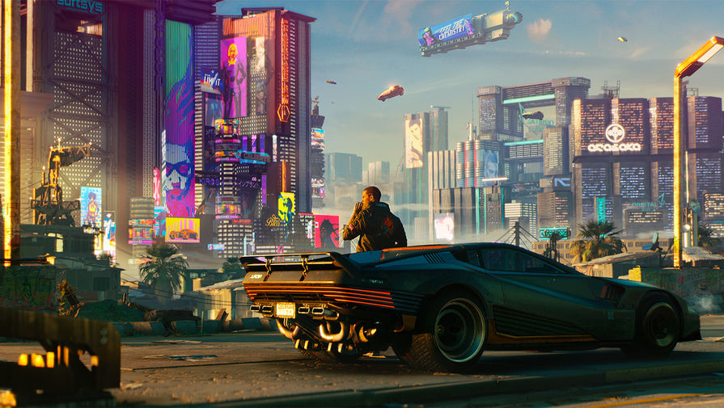

Вот и подоспел новый ежеквартальный отчёт о разработке Diablo IV — последний в этом году! В этот раз девелоперы рассказали об экипировке и затронули пару тем из прошлых статей.
Древо умений
Новый хотфикс для Cyberpunk 2077 уже доступен на консолях PlayStation, Xbox и ПК. Вот список изменений:
Квесты
Исправлена проблема с достижением конечной цели в «Заказ: Свободная пресса».
Исправлена проблема с началом разговора с Джонни в конце «Пассажира».
Исправлена редкая проблема, из-за которой NPC больше не звонили Ви, если квест «Звуки музыки» был прерван на полпути.
Исправлена ошибка, из-за которой Никс не переходил в свое состояние по умолчанию в «Сетевая магия» и «Оттепель».
Исправлены проблемы с блокировкой прогресса в «Стражи беспорядка», если покинуть место квеста.
Исправлена невозможность найти Деламейн в «Реинтеграции».
Исправлены проблемы, связанные с тем, чтобы оставаться во второй фазе квеста после завершения боя в Пасифике с Озобом при игре после финала.
Исправлена ошибка, из-за которой кочевники больше не появлялись, если Ви покидает зону квеста в середине боя в «Не звоните Солу» / «Укрощение василиска».
Скорректированы сопоставления и повторно включен трекер квестов в «Потерянный рай» / «Распознавание образов» / «Человеческий фактор».
Исправлены ограничения на свободу вставать и садиться, если ни одно из условий не выполняется в «Сыгранная роль».
Исправлены проблемы со временем и пространством, возникающие в результате покидания места квеста или отказа от квеста в «Мальчик с пистолетом».
Исправлена ошибка, из-за которой разговор с Джонни не начинался после выхода из отеля в «Метаморфозы».
Исправлена ошибка, из-за которой квест блокировался при выходе из области квеста до подъема на холм в «Мальчик с пистолетом».
Исправлена ошибка, из-за которой цель «Зайти в будку 9» не выполнялась, если в комнату входили слишком быстро в «Кукольный домик».
Исправлены проблемы Джеки, когда он сидел неподвижно в «Город мечты».
Другие исправления квестов
Геймплей
Исправлен предварительный просмотр при крафте оружия.
Визуальные
Уменьшено всплывающее окно внешнего вида автомобиля.
Ускорено переключение перспективы от первого лица на перспективу от третьего лица во время управления транспортом.
Исправлены проблемы с отсутствием анимации у важных квестовых неигровых персонажей во время катсцен.
Производительность и стабильность
Повышена стабильность, включая различные исправления сбоев.
Разное
Изменен эффект мигания во время брейндансов, чтобы снизить риск возникновения эпилептических симптомов. Эффект был сглажен, а частота и сила вспышек уменьшились.
Удалены песни, защищенные авторским правом, некорректно присутствующие в игре с включенной функцией «Отключить музыку, защищенную авторским правом».
Для ПК
При переключении языка по умолчанию в настройках игры теперь правильно устанавливается язык вашего клиента Steam.
Для консолей
Улучшено качество отражений на Xbox One и PlayStation 4, чтобы устранить эффект смазывания.
Исправлена ошибка, из-за которой достижение «Пустоши» зависало на 97% после завершения всех соответствующих миссий в Пустошах на Xbox.